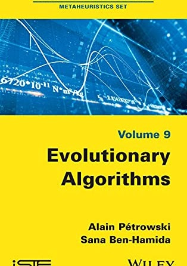
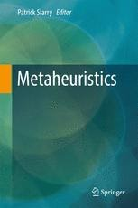

About Me
Associate Professor (HDR) in Computer Science at the Department of Mathematics and Computer Science, UFR SEGMI, Université Paris Nanterre, UPL.
Associate member of the Laboratory of Analysis and Modeling of Systems for Decision Support (LAMSADE), UMR CNRS 7243, Université Paris Dauphine, PSL.
Research
Affiliation
Member of the "Data Science" team at the Laboratory of Analysis and Modeling of Systems for Decision Support (LAMSADE) at Université Paris Dauphine.
Evolutionary Algorithms
- Time Series Regression & Financial Volatility
- Massive Data Classification
- Clustering & Community Detection (Gene Networks)
Numerical Problems
- Model Calibration in Finance
- Combinatorial Optimization (VRP)
- Scheduling Workflows in Cloud
PhD Co-Supervision
Houria Braikia
2022 - Present"Prediction of Marine Biodiversity Levels"
Marwa Ben M'Barek
2018 - 2022"Genetic Algorithms for Gene Community Detection"
Hmida Hmida
2016 - 2019"Extension of Genetic Programming for Supervised Learning"
Wafa Abdelmalek
2007 - 2011"Prediction of Implied Volatility by Genetic Programming"
Publications

Evolutionary Algorithms
Alain Petrowski, Sana Ben-Hamida
Wiley-ISTE, 2017

Metaheuristics
Editor: Patrick Siarry
Springer, Cham, 2016
Recent Papers
-
Ben Hamida S., Hmida H., Borgi A., Rukoz M. (2021) Adaptive sampling for active learning with genetic programming. Cognitive Systems Research
-
Ben Hamida S., Benjelloun G., Hmida H. (2021) Trends of Evolutionary Machine Learning to Address Big Data Mining. Springer
-
Ben M'barek M., Ben Hamida S., Borgi A., Rukoz M. (2021) GA-PPI-Net Approach vs Analytical Approaches for Community Detection in PPI Networks. Procedia Computer Science
-
Ben Hamida S., Benjelloun G. (2021) Extending DEAP with Active Sampling for Evolutionary Supervised Learning. ICSOFT 2021
Tutorials
Doctoral Course
LAMSADE 2019
Invited Talks
Doctoriales LIPAH 2018
Genetic Programming for Machine Learning: Principles and Example of Application to Symbolic Regression in Finance
View SlidesTeaching
Master Data Science (D3S-IES)
-
Advanced Machine
Learning
Data cleaning, reduction, transformation, Ensemble Learning, SVMs, etc.
-
Advanced
Databases
Advanced SQL, Data Analysis, Optimization, Indexing
-
NoSQL
Databases
MongoDB, Graph Databases, Neo4j
Master MIAGE
-
Application of Machine
Learning
Supervised/Unsupervised Learning, Classification, Regression, Clustering
Master APE
-
Professional Workshops in
Python
Numpy, Pandas, Matplotlib, Seaborn
Get In Touch
Feel free to reach out for collaborations or questions.
Université Paris Nanterre
UFR SEGMI - Office E37
200 avenue de la République, 92000 Nanterre
Université Paris Dauphine - PSL
LAMSADE - UMR CNRS 7243
Pl. du Maréchal de Lattre de Tassigny, 75016 Paris